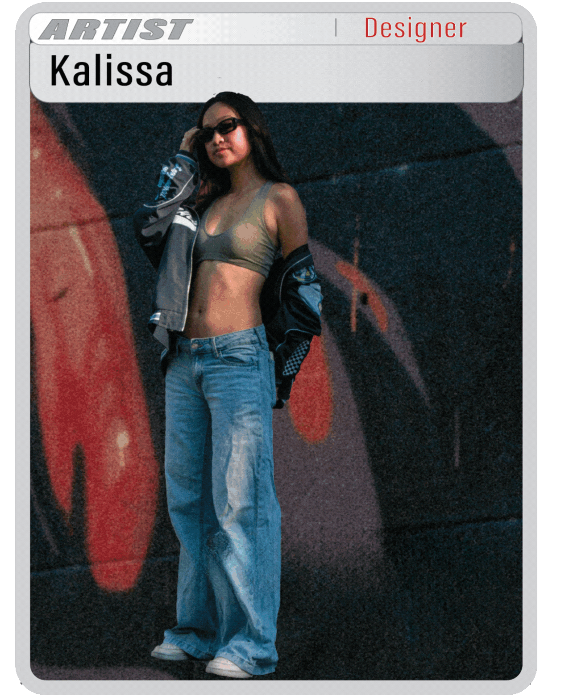

KALISSA TAN

Kalissa Tan
Graphic Designer
HTML
CSS
Adobe Creative Cloud
Print Production
Book Binding
My name is Kalissa Tan, and I am a graphic designer from Chicago, IL. I am currently a senior pursuing a BFA in graphic design at Virginia Commonwealth University School of the Arts, as well as a minor in marketing. I am passionate about web design, digital design, product marketing, publication, and client-facing marketing materials.
As a graphic designer with an unsatiable appetite for learning and exploring, I try my hand at many different mediums, but am most efficient at HTML/CSS coding and digital design. I love getting hands-on with publications and printed works as well, exploring different materials and ways to create. I strive to embrace and build community with my designs, and open a new outlet of communication for when words can't.
As a graphic designer with an unsatiable appetite for learning and exploring, I try my hand at many different mediums, but am most efficient at HTML/CSS coding and digital design. I love getting hands-on with publications and printed works as well, exploring different materials and ways to create. I strive to embrace and build community with my designs, and open a new outlet of communication for when words can't.